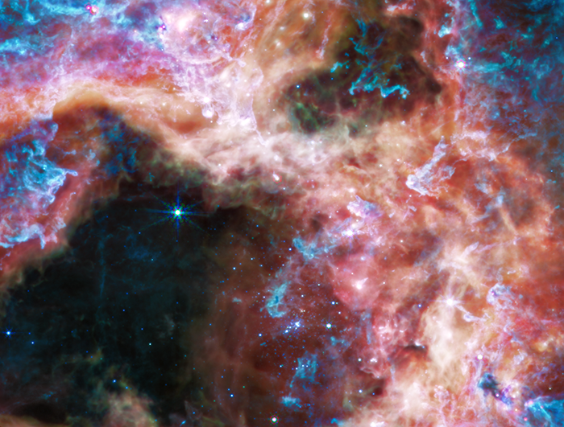

Tarantula Nebula | |
| |
|
At the longer wavelengths of light captured by its Mid-Infrared Instrument (MIRI), Webb focuses on the area surrounding the central star cluster and unveils a very different view of the Tarantula Nebula. In this light, the young hot stars of the cluster fade in brilliance, and glowing gas and dust come forward. Abundant hydrocarbons light up the surfaces of the dust clouds, shown in blue and purple. Much of the nebula takes on a more ghostly, diffuse appearance because mid-infrared light is able to show more of what is happening deeper inside the clouds. Still-embedded protostars pop into view within their dusty cocoons, including a bright group at the very top edge of the image, left of center. Other areas appear dark, like in the lower-left corner of the image. This indicates the densest areas of dust in the nebula, that even mid-infrared wavelengths cannot penetrate. These could be the sites of future, or current, star formation. MIRI was contributed by ESA and NASA, with the instrument designed and built by a consortium of nationally funded European Institutes (The MIRI European Consortium) in partnership with JPL and the University of Arizona. |
 |
| |
|
Image: |